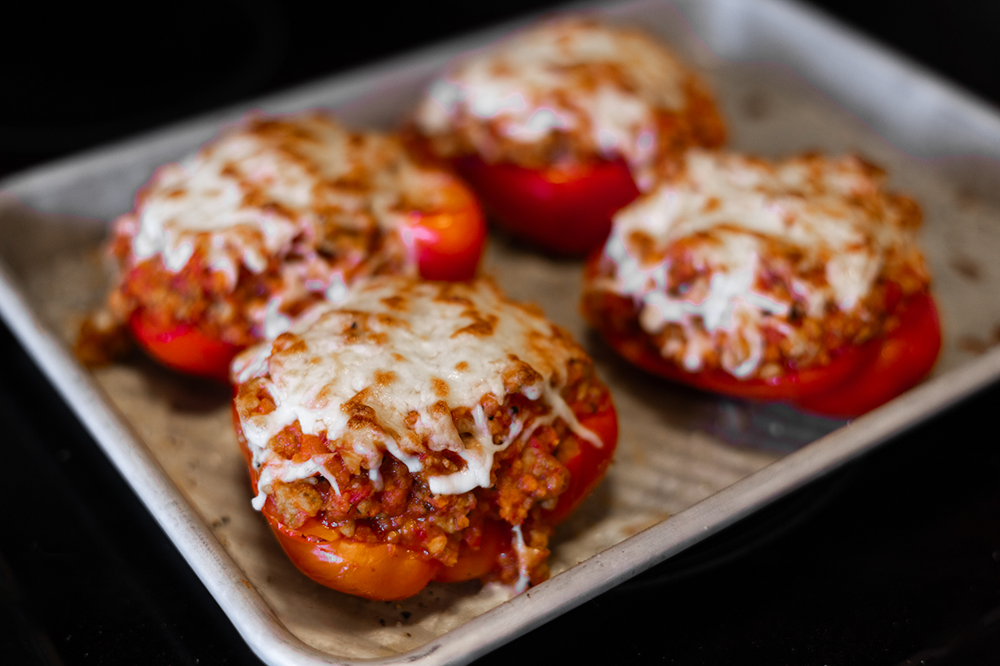
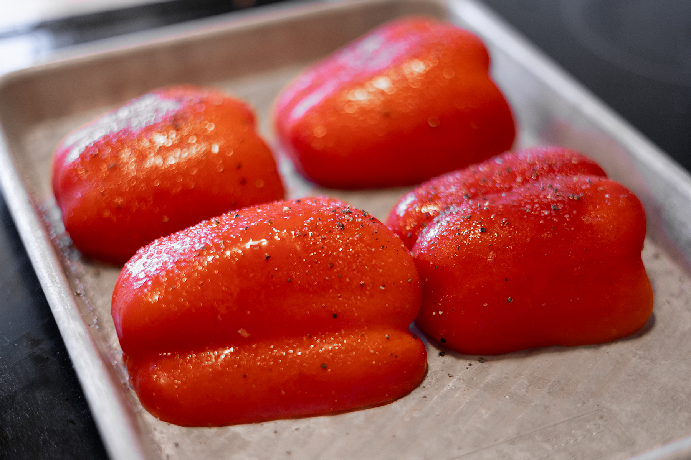
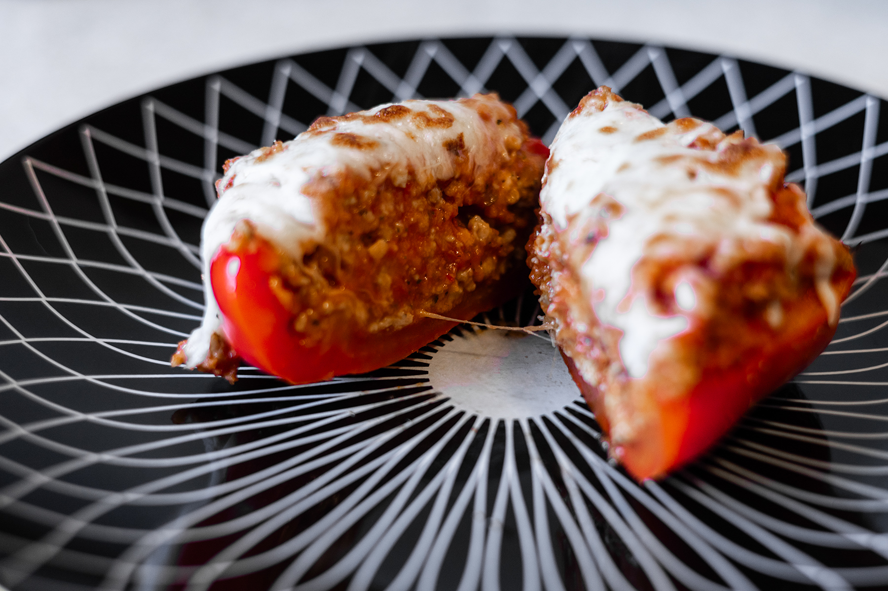

Chicken Parmersan Stuffed Peppers

This take on stuffed peppers is cheesy and delicious. It will satisfy your craving for italian while skipping the pasta. Reciped serves 2, but we ogften have leftovers when I make this as it is incredibly filling.
Ingredients
- 2 large bell peppers
- 1lb ground chicken
- 1/2 cup panko breadcrumbs
- 1 tbsp Olive or Avocado Oil
- 1/4 cup grated Parmesan Cheese
- 1/2 cup shredded Mozzarella Cheese
- 2 cups Marinara Sauce
- 1 tsp Oregano
- 1 tsp (or measure with your heart) Garlic Powder
- Salt and Pepper
Instructions
- Set oven to broil. Slice washed peppers in half lengthwise and remove seeds. Place them facedown on a baking sheet and season with salt and pepper. broil peppers for 8 ish minutes.

- Make panko mixture: In a small bowl combine panko and oil. Stir to coat and hydrate. Add parmesan and half mozzarella cheese and mix well.
- In a large skillet, fully cook the ground chicken. Season with oregano, garlic powder, salt, and pepper to taste.
- Reduce heat to medium/low. Stir in the marinara sauce and panko mixture to cooked chicken. Once cheese is melted, remove from heat.
- Flip peppers so that the open side is facing up and stuff with your chicken mixture. It should be heaping, with maybe even some left over (its great added to pasta as leftovers!).
- Top with remaining mozzarella and broil for 3-5 minutes, or until cheese is bubbly and golden brown. Let cool for 5 minutes before serving.
